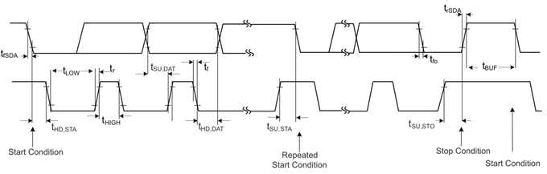
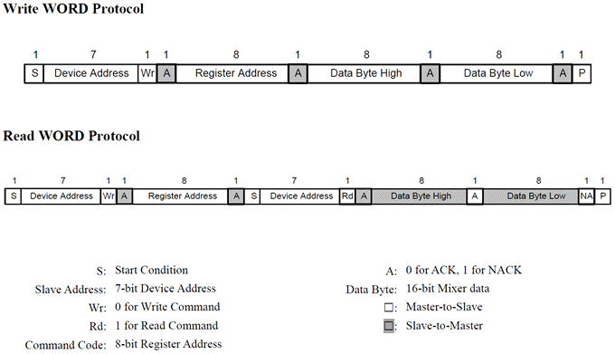
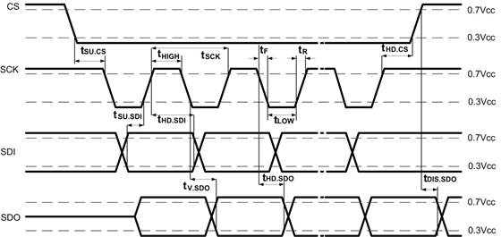
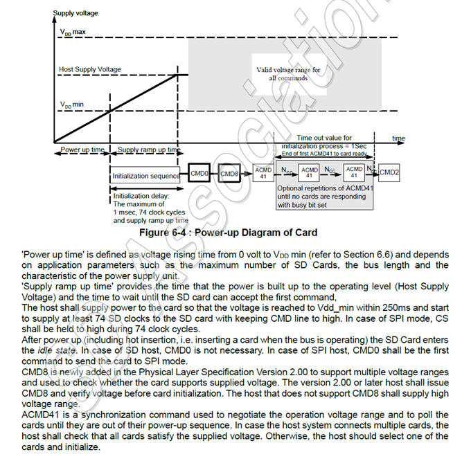
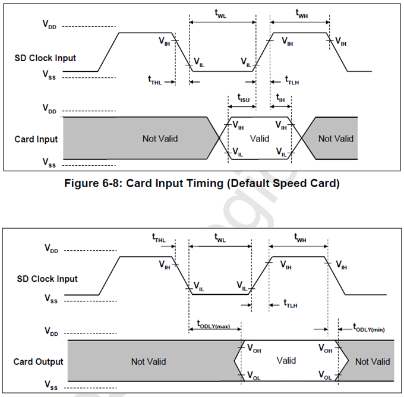
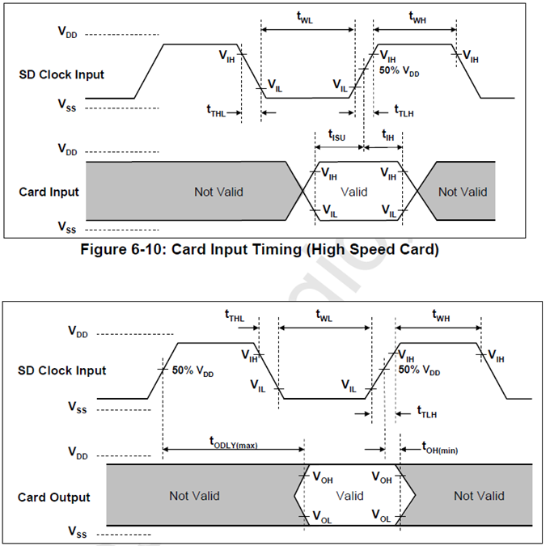
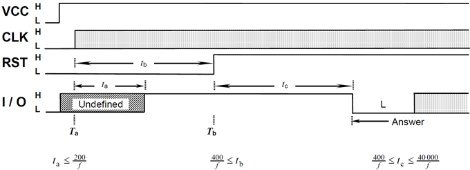
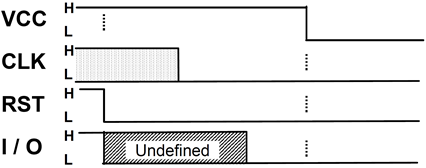

单板测试规范
概述
编写目的
研发设计产品的单板硬件测试指导。
测试准备
测试仪器
| 示波器 | Tektronix MSO54 |
|---|---|
| 无源电压探头 | Tektronix TPP1000 |
| 直流电源 | GWINSTEK GPS-2303C |
| 频谱分析仪 | Keysight N9010B C |
| 频谱分析仪 | HP8596E |
| 万用表 | |
| 同轴电缆 |
测试条件
- 测试仪器使用前需要校准
- 单板/系统上电正常工作30分钟后测试
- 测试仪器和测试单板需要共地
- 信号质量测试点选择在信号接收端
测试项目
单板功耗（Power consumption）
适配器供电(针对网关产品)
- 使用12V适配器供电，LoRa，WiFi，4G，以太网等业务正常运行，
- 禁用wifi功能，4g、以太网功能跑起来，记录LoRa 接收和发送时的最大电流
- 启用wifi功能，4g、以太网功能跑起来，记录LoRa 接收和发送时的最大电流
POE设备供电(针对网关产品)
- 使用12V适配器供电，LoRa，WiFi，4G，以太网等业务正常运行，
- 禁用wifi功能，4g、以太网功能跑起来，分别测试LoRa 接收和发送时的最大电流
- 启用wifi功能，4g、以太网功能跑起来，分别测试LoRa 接收和发送时的最大电流
电源完整性（PI）
电压精度（voltage accuracy）
测试步骤
- 使用电压表（或万用表）的黑表笔连接测试电源的地
- 使用电压表（或万用表）的红表笔连接被测试电压
- 读取电压表的数值
测试点
- 电源模块(DC/DC,LDO等)的电压输出管脚或就近的电容
- 芯片的电源管脚或就近的电容
测试标准
一般在标称电压值5%范围内，或者根据芯片的Datasheet要求来确定。
注意事项
- 首要推荐使用精密的电压表测试；
- 次要选择用数字万用表，确保电池电量充足，否则测量误差较大；
- 不推荐使用示波器测量电压精度，偏差较大；万一使用，则需设置为直流并取均方根值（RMS）。
纹波噪声（Ripple & Noise）
测试步骤
- 设置示波器AC耦合，同轴电缆一端接示波器，另外一端焊接到被测试电压的电容两端。
- 测试纹波：设置示波器带宽20MHz，调节水平刻度为us级/格，示波器至少捕捉4个周期以上，读取示波器的峰峰值，周期/频率。
- 测试噪声：设置示波器带宽为全带宽，波形设置累计模式，调节水平刻度为ms级/格，读取示波器的峰峰值。
- 分别测试单板在空载和满载的情况。
测试点
芯片的电源管脚附近的电容
测试标准
- 纹波：2%，或者依据datasheet要求；
- 噪声：5%，或者依据datasheet要求。
注意事项
- 无同轴电缆时，尽量使用自制的电源测试探头
- 尽量使用小衰减比的探头，探头的接地线尽量短
电源上下电波形（Power on and off waveforms）
测试步骤
- 设置示波器触发方式为边沿触发。
- 上下电，查看波形是否单调，并读取过冲值。
测试标准
波形单调，无平台、跌坑。过冲值一般不超过5%，或者依据datasheet要求。
注意事项
- 需要遍历以下几种情况
- 12V适配器拔插
- 单板接口拔插
- POE上下电情况
电源上下电时序（Sequence）
测试步骤
- 将探头连接主板待测电源的电容处。
- 示波器设置上升沿触发，将主板上电开机，得到上电时序。
- 示波器设置下降沿触发，将主板下电关机，得到上电时序。
测试标准
时序标准参考datasheet要求。
信号完整性（SI）
时钟信号（Clock）
测试步骤
- 尽量选择靠近接收端，芯片时钟输入端的引脚连接探头。
- 使用示波器测量表3的相关参数
- 使用频率计测试接收端时钟的频率，并核算ppm。
测试标准
时钟信号参考datasheet要求。
| Symbol | Parameter |
|---|---|
| Vih | 高电平幅值 |
| Vil | 低电平幅值 |
| Tr | 上升时间 |
| Tf | 下降时间 |
| Freq. | 频率 |
| Duty cycle | 占空比 |
| tHIGH | 正脉冲宽度 |
| tLOW | 负脉冲宽度 |
| Period | 周期 |
| Jitter | 抖动 |
| Overshoot | 过冲 |
| Undershoot | 下冲 |
注意事项
- 注意观察时钟信号边沿是否单调，波形是否存在较大毛刺，回勾
- 占空比满足40%-60%
复位信号（Reset）
测试步骤
- 尽量选择靠近芯片接收端的阻容或者过孔连接探头。
- 单板上电，观察复位信号的波形
测试标准
复位信号参考datasheet要求。
注意事项
- 除了看水平时间，还需要展开看边沿单调性等信号质量；
- 对低电平复位有效的信号，取下降沿触发；
- 对于上电复位信号，取最晚上电的电源信号作参考，与复位信号一起测试。
- 复位信号有效的脉宽长度需要满足Datasheet的要求。
I2C
测试步骤
- 分别测试SCL和SDA信号高低电平，确认是否存在过冲，毛刺。
- 用示波器测量I2C总线的各项参数，并记录。
测试标准
I2C信号标准参考datasheet要求。


| PARAMETER | SYMBOL | STANDARD-MODE | FAST-MODE | Hs-MODE | UNIT | |||
|---|---|---|---|---|---|---|---|---|
| MIN. | MAX. | MIN. | MAX. | MIN. | MAX. | |||
| LOWlevel input voltage | VIL | -0.5 | 0.3VDD | -0.5 | 0.3VDD | -0.5 | 0.3VDD | V |
| HIGHlevel input voltage | VIH | 0.7VDD | VDD +0.5 | 0.7VDD | VDD +0.5 | 0.7VDD | VDD +0.5 | V |
| SCLclock frequency | fSCL | 0 | 100 | 0 | 400 | 0 | 3400 | kHz |
| LOWperiod of the SCL clock | tLOW | 4.7 | – | 1.3 | – | 0.16 | – | ms |
| HIGHperiod of the SCL clock | tHIGH | 4 | – | 0.6 | – | 0.06 | – | ms |
| Risetime of both SDA and SCL signals | tr | – | 1000 | 20 | 300 | 10 | 40 | ns |
| Falltime of both SDA and SCL signals | tf | – | 300 | 20 | 300 | 10 | 40 | ns |
| Holdtime (repeated) START condition | tHD;STA | 4 | – | 0.6 | - | 0.16 | - | ms |
| Set-uptime for a repeated START condition | tSU;STA | 4.7 | – | 0.6 | – | 0.16 | – | ms |
| Datahold time | tHD;DAT | 0 | 3.45 | 0 | 0.9 | 0 | 0.07 | ms |
| Dataset-up time | tSU;DAT | 250 | - | 100 | – | 10 | – | ns |
| Set-uptime for STOP condition | tSU;STO | 4 | – | 0.6 | – | 0.16 | – | ms |
| Busfree time between a STOP and START condition | tBUF | 4.7 | – | 1.3 | – | 0.1 | – | ms |
SPI
测试步骤
- 分别测试CLK,CS,SDI,SDO信号的高低电平，确认是否存在过冲，毛刺。
- 量测SPI总线的各项参数，并记录。

| 符号 | 名称 |
|---|---|
| VIL | 输入信号的低电平范围 |
| VIH | 输入信号的高电平范围 |
| Freq | 时钟频率 |
| tR | 时钟上升时间 |
| tF | 时钟下降时间 |
| tLOW | 时钟低电平时间 |
| tHIGH | 时钟高电平时间 |
| tSU.CS | 片选信号建立时间 |
| tSU.SDI | 数据输入信号建立时间 |
| tHD.CS | 片选信号保持时间 |
| tHD.SDI | 数据输入信号保持时间 |
| tHD.SDO | 数据输出信号保持时间 |
| tV.SDO | 数据输出有效时间最大时间 |
UART
测试步骤
- 分别测试Txd Rxd信号的高低电平，确认是否存在过冲，毛刺。
- 测量UART总线的各项参数，并记录。
- 用光标卡UART的波特率
测试标准
参考芯片datasheet的要求
SD卡
| Parameter | Symbol | Min | Max | Unit | Remark |
|---|---|---|---|---|---|
| Supply Voltage | VDD | 2.7 | 3.6 | V | |
| Output High Voltage | VOH | 0.75*VDD | V | IOH=-2mA VDD min | |
| Output Low Voltage | VOL | 0.125*VDD | V | IOL = 2mA VDD min | |
| Input High Voltage | VIH | 0.625*VDD | VDD+0.3 | V | |
| Input Low Voltage | VIL | VSS-0.3 | 0.25 *VDD | V | |
| Power Up Time | 250 | ms | From 0V to VDD min | ||
| Supply ramp up time | 1 | ms | or >74 sd clocks |

下电时序
下电时，在 1mS 内电源电压必须下降到小于500mV。
总线时序
普通模式

| Parameter | Symbol | Min. | Max. | Unit | Remark |
|---|---|---|---|---|---|
| Clock CLK (All values are referred to min (VIH) and max (VIL), | |||||
| Clock frequency Data Transfer Mode | fPP | 0 | 25 | MHz | CCARD ≤ 10 pF (1 card) |
| Clock frequency Identification Mode | fOD | 0(1)/100 | 400 | kHz | CCARD ≤ 10 pF (1 card) |
| Clock low time | tWL | 10 | ns | CCARD ≤ 10 pF (1 card) | |
| Clock high time | tWH | 10 | ns | CCARD ≤ 10 pF (1 card) | |
| Clock rise time | tTLH | 10 | ns | CCARD ≤ 10 pF (1 card) | |
| Clock fall time | tTHL | 10 | ns | CCARD ≤ 10 pF (1 card) | |
| Inputs CMD, DAT (referenced to CLK) | |||||
| Input set-up time | tISU | 5 | ns | CCARD ≤ 10 pF (1 card) | |
| Input hold time | tIH | 5 | ns | CCARD ≤ 10 pF (1 card) | |
| Outputs CMD, DAT (referenced to CLK) | |||||
| Output Delay time during Data Transfer Mode | tODLY | 0 | 14 | ns | CL ≤ 40 pF (1 card) |
| Output Delay time during Identification Mode | tODLY | 0 | 50 | ns | CL ≤ 40 pF (1 card) |
高速模式

| Parameter | Symbol | Min. | Max. | Unit | Remark |
|---|---|---|---|---|---|
| Clock CLK (All values are referred to min (VIH) and max (VIL), | |||||
| Clock frequency Data Transfer Mode | fPP | 0 | 50 | MHz | CCARD ≤ 10 pF (1 card) |
| Clock low time | tWL | 7 | ns | CCARD ≤ 10 pF (1 card) | |
| Clock high time | tWH | 7 | ns | CCARD ≤ 10 pF (1 card) | |
| Clock rise time | tTLH | 3 | ns | CCARD ≤ 10 pF (1 card) | |
| Clock fall time | tTHL | 3 | ns | CCARD ≤ 10 pF (1 card) | |
| Inputs CMD, DAT (referenced to CLK) | |||||
| Input set-up time | tISU | 6 | ns | CCARD ≤ 10 pF (1 card) | |
| Input hold time | tIH | 2 | ns | CCARD ≤ 10 pF (1 card) | |
| Outputs CMD, DAT (referenced to CLK) | |||||
| Output Delay time during Data Transfer Mode | tODLY | 14 | ns | CL ≤ 40 pF (1 card) | |
| Output Hold time | tOH | 2.5 | ns | CL ³ 15pF (1 card) | |
| Total System capacitance for each line1 | CL | 40 | pF | 1 card |
SIM卡
SIM电源
| Symbol | Conditions | Minimum | Maximum | Unit |
|---|---|---|---|---|
| UCC | Class A | 4.5 | 5.5 | V |
| Class B | 2.7 | 3.3 | ||
| Class C | 1.62 | 1.98 |
RST
| Symbol | Conditions | Minimum | Maximum | Unit |
|---|---|---|---|---|
| UIH | 0,8 UCC | UCC | V | |
| UIL | 0 | 0,12 UCC | V | |
| tR tF | CIN = 30 pF | 1 | µs |
The voltage shall remain between – 0,3 V and UCC + 0,3 V.
CLK
| Symbol | Conditions | Minimum | Maximum | Unit |
|---|---|---|---|---|
| UIH | 0,7 UCC | UCC | V | |
| UIL | Class A and class B | 0 | 0,5 | V |
| Class C | 0 | 0,2 UCC | V | |
| tR tF | CIN = 30 pF | 9 % of cycle |
The voltage shall remain between – 0,3 V and UCC + 0,3 V.
IO
| Symbol | Conditions | Minimum | Maximum | Unit |
|---|---|---|---|---|
| UIH | 0,7 UCC | UCC | V | |
| UIL | 0 | 0,15 UCC | V | |
| tR tF | CIN = 30 pF; COUT = 30 pF | 1 | µs |
The voltage shall remain between – 0,3 V and UCC + 0,3 V.
上电时序 (Tb,Tc)

下电时序

本博客所有文章除特别声明外，均采用 CC BY-NC-SA 4.0 许可协议。转载请注明来自 Stephen's blog！